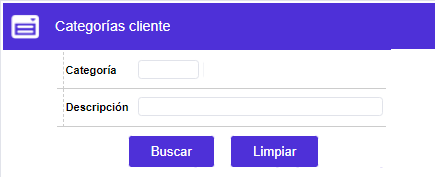

Categorías clientes
Mediante este formulario, la entidad puede definir diferentes conjuntos de reglas de juego -parámetros- y/o costos, denominados categorías, a partir de las cuales clasifica a sus clientes, posibilitando el aplicar una serie de parámetros que se sobreponen a los señalados para cada uno de los productos, que eventualmente pudiera tener un cliente con la entidad y, cuyo objetivo es ofrecer a los clientes de cada categoría, un trato preferencial, según sea su clasificación. La categoría puede ser asociada durante el ingreso del cliente en la base de datos, mediante la novedad datos de calificación o desde la opción segmentación de clientes.
Adicionalmente cuenta con un filtro de búsqueda.
Filtro: Se pueden realizar consultas a través de los siguientes datos: Categoría, digitando el código que identifica a cada una de las categorías; si se tienen múltiples categorías, digitando parte del nombre o descriptivo de la categoría, entre los símbolos o comodines %nombr%, por ejemplo, y luego presionar Buscar, el sistema retornará todas aquellas categorías, cuya descripción coincida parcialmente con el texto indicado entre dichos símbolos.

El formulario contiene enlaces a las opciones: Actualizar, Eliminar, Adicionar y Marcas de categorias, que permite invocar el formulario en el que se parametrizan las condiciones que aplican para cada franquicia.
Adicionar: Al invocar ese enlace se despliega un formulario.

Descripción de campos
|
Categoría |
Campo numérico de hasta 4 dígitos, obligatorio, en el que se debe registrar el código asignado por la entidad, a cada una de las categorías de cliente que requiera definir. |
|
Descripción |
Campo alfanumérico de máximo 30 posiciones, obligatorio, en el que se debe registrar el nombre, descriptivo o característica principal, con el que se diferenciará cada categoría. |
Actualizar: Si el usuario selecciona un registro e invoca el enlace Actualizar, se despliega un formulario en el cual el único campo modificable es Nombre:
Marcas de categorías: Si el usuario selecciona un registro e invoca este enlace, se despliega un formulario en el cual, la entidad puede definir para cada una de las marcas o franquicias para las que puede procesar movimiento y, para estas, definir los valores a dichos parámetros. El formulario contiene enlaces a las opciones: Actualizar, Eliminar, Adicionar y Detalle.
Adicionar: Si el usuario invoca este enlace, se despliega un nuevo formulario dividido en dos bloques de datos: General y Cuota de manejo.
Descripción de campos - General
|
Marca |
Campo obligatorio, con lista de valores, de la que debe seleccionarse la franquicia, asociada a la categoría, para la que aplicarán los valores aquí definidos. |
|
Meses vigencia plástico |
Si por parametrización el sistema debe tener en consideración, lo aquí definido, indica el número de meses sobre el que se proyecta la fecha de vencimiento del plástico y, así mismo, las renovaciones individuales o masivas de los plásticos de clientes que tengan esta misma categoría. |
|
Bloquea por pago mínimo |
Campo no obligatorio, en el que se señala si para los clientes pertenecientes a esta categoría y que posean productos pertenecientes a la marca seleccionada, el sistema debe o no bloquear el plástico en caso de no realizar el pago mínimo oportuno. |
|
Ciclo de facturación |
A través de este campo, que contiene lista de valores, la entidad define el ciclo de facturación a aplicar para los clientes que hagan parte de la categoría y tengan productos pertenecientes a la marca seleccionada. |
|
% Sobrecupo autorizado |
En este campo se define por categoría la relación entre el cupo del producto y el exceso sobre el mismo autorizado para el producto sin que sea bloqueada la tarjeta. |
|
% Bloqueo sobrecupo |
Campo en el que la entidad determina en relación con el porcentaje de sobrecupo autorizado, cual debe ser el porcentaje real utilizado por el cliente para que la tarjeta sea bloqueada. |
|
Valor bloqueo por mora |
En este campo se registra el monto a partir del cual será bloqueada la tarjeta en el evento de entrar en mora. |
|
Bloqueo edad mora |
Campo en el que se define el momento a partir del cual será bloqueada la tarjeta en el evento de tener vencida su cartera. |
|
Número máximo refinanciaciones |
En este campo se registra la cantidad de veces que un crédito puede ser refinanciado en el lapso de tiempo (expresado en número periodos) determinado en el campo siguiente. |
|
En ... meses |
En este campo se indica la cantidad de periodos que se deben tomar como referencia para determinar el número de refinanciaciones permitidas. |
|
% Cuota afiliación |
Campo que permite a la entidad indicar el porcentaje a cobrar sobre el valor de la cuota de afiliación definida para el producto, al cliente que pertenece a la categoría y que tenga productos pertenecientes a la marca seleccionada. |
|
Periodos excención |
En este campo se determina la cantidad de periodos durante los cuales se aplicará el descuento indicado en el campo anterior. |
|
% Cuota seguro |
Campo que permite a la entidad indicar el porcentaje a cobrar sobre el valor de la cuota de seguro definida para el producto, al cliente asociado a la categoría y que tenga productos pertenecientes a la marca seleccionada. |
|
Periodos excención |
En este campo se determina la cantidad de periodos durante los cuales se aplicará el descuento indicado en el campo anterior. |
|
% Costos dependientes |
Campo que permite definir la relación a descontar al cliente perteneciente a la categoría por concepto de cuota de afiliación, manejo y seguro sobre las tarjetas amparadas que dependan del cliente. |
|
% Costo reposición |
En este campo se registra el porcentaje a descontar sobre el costo de reposición del plástico definido a nivel del producto para los clientes asociados a la categoría y aplicable sobre los productos que posea y pertenezcan a la marca seleccionada. |
|
% Costo reexpedición |
Campo que permite definir la relación a descontar entre el valor de costo de reexpedición del plástico y el valor a ser cobrado al cliente por pertenecer a determinada categoría y cuyos productos correspondan a la marca seleccionada. |
|
% Costo renovación |
En este campo se registra el porcentaje a descontar sobre el costo de renovación del plástico definido a nivel del producto para los clientes asociados a la categoría y aplicable sobre los productos que posea y pertenezcan a la marca seleccionada. |
|
Tasa preferencial compras |
Campo con lista de valores en la cual se puede seleccionar el indicador económico a utilizar como referente para liquidar los intereses sobre las compras efectuadas con productos pertenecientes a la marca seleccionada, para los clientes asociados a la categoría. |
|
Tasa preferencial avances |
En este campo con lista de valores se selecciona el indicador económico a utilizar como referente para liquidar los intereses sobre los avances efectuados con productos pertenecientes a la marca seleccionada, para los clientes asociados a la categoría. |
|
Débito a empleados |
Campo tipo combo con las opciones en Blanco, Rol de pagos y Débito automático, en el cual se selecciona la condición asociada con la categoría para la marca. Cuando el valor escogido es Rol de pagos o Débito automático se le está indicando al sistema que los clientes pertenecientes a esa categoría y para la marca seleccionada tienen la condición de empleados de la corporación. |
El segundo bloque de datos del formulario adicionar marca se denomina Cuota de manejo y le permite a la entidad establecer cobros porcentuales diferenciales sobre la cuota de manejo a lo largo del tiempo. Así, es posible que al inicio la entidad decida incentivar al cliente de la categoría no cobrándole cuota de manejo durante el primer año, y gradualmente ir subiendo un determinado porcentaje a cobrar a la cuota de manejo en los años siguientes.
Descripción de campos
|
Periodicidad |
Campo no obligatorio, que posee lista de valores tipo combo, mediante la cual la entidad determina la frecuencia con la cual se hará el cobro de la cuota de manejo para los clientes asociados a la categoría y sobre los productos pertenecientes a la marca que se está adicionando. |
|
% Cuota de manejo |
En este campo se indica el porcentaje que sobre el valor definido a nivel del producto se le va a cobrar al cliente asociado a la categoría por concepto de cuota de manejo por los productos que este posea y que pertenezcan a la marca seleccionada. |
|
% Cuota de manejo periodo 2, 3, 4, 5, 6 |
Campos en los que la entidad señala respectivamente los porcentajes a cobrar por cuota de manejo en cada periodo. |
|
Periodos excención |
En estos campos se determina para cada porcentaje de cuota de manejo definido en los campos anteriores, la cantidad de periodos durante los cuales aplica el cobro del porcentaje establecido. Es importante tener claro que los periodos se van a medir en la misma proporción definida por el usuario en el campo 'Periodicidad' de modo que si por ejemplo esta es trimestral y como periodos exención se registra el valor 6, se debe interpretar que el porcentaje aplicará por 18 meses (6 periodos de 3 meses cada uno). |
Actualizar: Si desde el formulario Marcas de categoría, el usuario selecciona un registro e invoca este enlace, se despliega un formulario en el cual el único campo NO modificable es Marca.
Detalle: Si desde el formulario Marcas de categoría, el usuario selecciona un registro e invoca este enlace, se despliega un formulario con la información completa del registro y en el cual ninguno de sus campos es modificable.